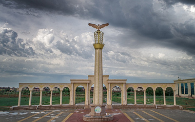
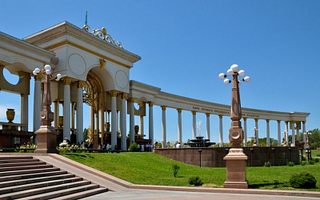
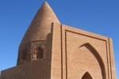

Ақтөбе облысы Қазақстан Республикасының батысында орналасқан. Ол 1932 жылы 10 наурызда құрылды. Облыстың аумағы 300,6 км2 құрайды (Республикада 2 орын). Ақтөбе облысы Қазақстан Республикасының батысында орналасқан. Ол 1932 жылы 10 наурызда құрылды. Облыстың аумағы 300,6 км2 құрайды (Республикада 2 орын). Ақтөбе облыс тұрғындарының саны 883 607 адамды құрайды (01 қаңтар 2020 ж.).
Ақтөбе облысының құрамына 12 аудан кіреді: Әйтеке би, Алга, Байғанин, Ырғыз, Карғалы, Қобда, Мартук, Мұғалжар, Темір, Ойыл, Хромтау, Шалкар. Ақтөбе қаласы - облыстық әкімшілік орталығы. 1869 жылы Елек пен Қарғала өзендерінің түйіскен жеріндегі тау бөктерінде негізі қаланған (осылайша атауы - «Ақтөбе»). 450154 адам бар (01.01.2020 ж.). Бұл облыс халқының 53,92% құрайды. Ақтөбе қаласынан Нұрсұлтан қаласына дейінгі арақашықтық - 1678 км. Ақтөбе облысы бірегей жерде орналасқан: солтүстігінде Орынбор облысымен мемлекеттік шекарасы (Ресей), батысында Батыс Қазақстан, Атырау, Маңғыстау облыстарымен, оңтүстігінде Қарақалпақстан (Өзбекстан) мемлекеттік шекарасы, шығыста Қостанай, Қарағанды, Қызылорда облыстарымен шектеседі.
Стела благодарности казахскому народу
Парк им. Первого Президента Республики Казахстан
Дереккөзі:
edem-v-gosti.ruЕсет батыр кесенесі - қазақ халқының біртуар ұлы, халық батыры Есет Көкеұлы бейітіне салынған бірден-бір көркем ескерткіш. Ол Ақтөбе қаласынан 44 шақырым жерде Бестамақ ауылында орналасқан.
Есет батыр қазақ халқынынң қолбасшысы және тарханы. Ол Кіші жүздің тама руынан шыққан, Кіші жүздің батыры Бөгенбайдың қызына үйленген, ал Бөгенбай Орта және Кіші жүз қазақтарын Ресейге қосуда көп болысқан азаматтардың бірі еді. Есеттің әкесі Көки Базарқұлұлы да атақты батыр болған, кезінде «Таймас батыр» (берілмейтін) деген атпен атап кеткен. Есеттің өзі Жоңғарларға қарсы соғысудан ерте бастады. Есет Көкеұлы дарынды қолбасшы ғана емес , ол сонымен қатар дарынды саясаткер, мемлекет қайраткері және тәуелсіздік және еркіндік үшін күрескен шынайы күрескер. Есет батыр 82 жасында 1749 жылы қайтыс болды.
Бестамақ ауылының төбесі, Елек өзенінің бойында Ақтөбе қаласының оңтүстік-шығысында 35 шақырымдық жерде жерленген. Бұл төбешікке Есет Көкеұлына 1750 жылдары кесене тұрғызылған. 1979 жылы сол жердің жергілікті тұрғындары ұлы батырға ақ кірпіштен құлыптас орнатты. Құлыптастың биіктігі 1,7 метр, ені 3 метр, ұзындығы 5 метр.
Бүгінгі күннің кесенесі 1992 жылы 325 жылдығын тойлауда салынған. Кесене қызғылт түсті Маңғыстау жерінен шыққан ұлутастан салынған. Кесене биіктігі 11 метр ені 5 метр
Дереккөзі:
culturemap.kzАқтолағай үстірті – тарихи және геологиялық маңызы бар республикалық табиғи қорық. Үстірт сонымен қатар өзінің сұлулығымен зерттеушілерді таң қалдырған, шетел ғалымдары қызуғушылық танытып, зерттегендер де бар. Қаз-қатар созылып жатқан жоталардың ұзындығынан көз талады.
Таулардың сұлулығы дәл бір ертегідегідей әсем, ал кіршіксіз әппақтығы еріксіз көз тартады, күн батуға таяған уақытта таудың ақ тастары кемпірқосақ секілді күннің сәулесімен түрлі-түсті түске боялады. Ақ тау мен жиегі көмкерілген көк шалғай шалғын шөптермен, құлпырған гүлдер табиғаттың бір сыйы дерсің. Ертегідей әдемілеп сипаттап қана қойғанымыз емес, шынында да тау етегінде емдік қасиеті бар түрлі өсімдіктер өседі, атап айтқанда итмұрын, долана, жалбыз т.б.
Екі облыстың (Атырау, Ақтөбе) шекарасында орналасқан Ақтолағай үстірті кезінде теңіздің түбі болған. Оған дәлел дәл осы жерлерден тас мүсіндерге айналған теңіз ұлуларының, кірпілерінің, кораллдардың және басқа да теңіз фауналарының көптеген түрлерін кездестіруге болады. Одан бөлек динозаврлардың сүйектері мен тістері, бізге беймәлім өсімдіктердің қалдықтарын көптеп кездестіруге болады.
Бұдан түйетін ой – кезінде Ақтолағай үстірті қайнаған тіршіліктің орталығы болғанын, табиғаттың ерекше бір сыйы екенін аңғарамыз. Шөлді және ұйытқыған топырақты жел мен күннен қорғайтын көлеңкелі орын болатын бұл аққарлы жартастар – қызықты оқиға іздеушілерге таптырмас орын деп айтуға болады. Ендігі тілек аталған өңірде туризмді дамыту тізгінін қолға алса (әсіресе жол жағы), елімізден ғана емес, әлемнің түкпір-түкпірінен туристердің ағылып келетін орталығы болатынына кәміл сенеміз.
Дереккөзі:
e-history.kz«Хан моласы» – ежелгі қорымдардың бірі. Ол Ақтөбе облысына қарасты Әйтеке би ауданы, Толыбай ауылынан 90 км қашықтықта жатыр. Ғалымдар ат басын тіреп, енді ғана көңіл қойып зерттей бастағанда, бұл маңда санаулы төмпешіктер мен әр жерде құлап жатқан құлпытастар ғана көзге ілігетін. Ал күмбезді зираттар бүгінге жетпей жапырылып, жермен-жексен болып кеткен. Әбілхайыр ханның мүрдесі осы қорымда жатқандығын халық арасындағы әңгімелер ғана емес, орыс ғалымдары да өз жазбаларында айтып кетеді.
1898 жылы И.Крафт бұл қорымның Торғайдан 80 км қашықтықта жатқандығын, хан моласының басында ерекше өскен тал барын жазған, сол секілді бұл орынды киелі тұтып, тәу етіп келушілер көп болғанын айтады. Ал тәуелсіз Қазақстан тұсында «Хан моласы» 2007 жылдан бері толық зерттеліп, оған археологтар ғана емес, тарихшылар, этнографтар, сәулетшілер мен геофизиктер, антропологтар мен генетиктер тартылды. Моланың алып жатқан орны 16 га жетеді. ХХ ғасыр соңында осы орыннан 700 зираттың орны белгілі болса, одан кейінгі зерттеулерде олардың саны мыңға жуықтады.
Бізге жеткен мәліметтерде Әбілхайыр ханның қыпшақтық дәстүрмен жерленгені, яғни қару-жарағы өзімен бірге жер қойнына тапсырылғаны анықталды. Ал мола басына ұлы Нұралы 12 ағаш отырғызған. Зерттеушілер хан зиратын сол арқылы іздеп тапқан. Бірнеше жылдар бойы жүргізілген зерттеулерден соң, бұл орын мемориалды кешен болуы керек деп шешіліп, осы іс қолға алынды.
Дереккөзі:
el.kzАщылысай сарқырамасы (Қасқыр сарқырамасы)
Қасқыр сарқырамасы туралы бірнеше аңыз бар. Кейде «Немой ауылы» деп те атайды. «Қасқыр сарқырамасы, Ащылысай сарқырамасы, «Немой ауылы» деген атаулар бар. Бұрын бұл маңда ауыл болған. Тоқырау кезінде бәрі көшіп кетіп, Ратай атты бір ғана тұрғын қалған. Ол мылқау болған соң ауыл Немой аталып кеткен секілді. Қасқыр сарқырамасына келер болсақ, көктемде қасқыр бөлтірігін судан өткізбек болып, сарқырамаға түсіріп алған екен. Ұлыған дауыс та шығады деген қауесет бар. Негізі сарқыраманы мамыр айында ғана көруге болады.
Дереккөзі:
lenta.inform.kzҚобыланды батыр мемориалды кешені
Әлемде эпостық жырлар тудырған санаулы ұлттар бар. Солардың бірі - қазақ халқы. Қазақта 400-ге жуық эпостық жыр бар. Соның ішінде ең көп тарағаны, мазмұны мен көлемі жағынан шұрайлысы - «Қобыланды батыр» жыры. Жырдың 29 нұсқасы бар. Бір замандарда батыр сүйегі жатқан жерде мазар болған. Ол туралы 1906 жылы орыс ғалымы В.В.Карлсон, кейін Жозеф-Антуан Кастанье жазып кеткен. Мазар ерте кезде бұзылып, ХХ ғасырдың бас кезінде үйінді болып қалған. ХХ ғасырдың елуінші жылдары ғұлама ғалым Әлкей Марғұлан осы бейіт басында болған. Алпысыншы жылдардың аяқ кезінде антрополог Ноэль Шаяхметов қазба жұмысын жүргізіп, Герасимов әдісімен бас сүйегіне қарап кескінін жасауды жоспарлайды. Әртүрлі себептермен бұл жұмыс 2000 жылға дейін тоқтап қалған. 2004 жылы «Мәдени мұра» мемлекеттік бағдарламасына кіргізіп, ғылыми жұмыстар жандана бастаған.
Мемориалдық кешен Қобыланды батырдың сүйегі қайта жерленген мавзолейден, Даңқ залынан және белгі тастардан тұрады. Төбесінен қарағанда кешен қалқанның үстіне қойылған батырдың дулығасы және жанында жатқан садаққа ұқсайды. Мавзолейдің негізгі қабырғасы күйдірілген қызыл кірпіштен биіктігі – 7 метрлік 15 үшкіл тіреулер тәрізді қаланып, сыртқы пішіні батырдың дулығасы тәріздес күмбезделген. Кешеннің екінші бөлігі мавзолейдің батыс бөлігіндегі жалпы аумағы – 447 м2 батырдың садағы бейнелі Даңқ залынан, холлдан және әкімшілік-шаруашылық бөлмелерінен тұрады. Кешенде Қобыланды батырдың қайрақ тасы, сүйегі қайта жерленгенде орнатылған тас белгілер орналасқан. Кешен Жиренқопа ауылының шығысындағы Ұлы Қобда өзенінің бойындағы жалпы аумағы – 2,06 га жерді алып жатыр. Кешен құрылысының авторы - ҚР еңбегі сіңген сәулетші Бек Ыбыраев.
Некрополь Абат Байтақ
Батыс Қазақстандағы бірегей және сирек кездесетін сәулет өнерінің ескерткіші Абат-Байтақ Ақтөбе облысы Қобда ауданындағы Бесқопа ауылының шығыс беткейінде он екі шақырым шамасында орналасқан.
Ескерткішті XIX ғасырда француз саяхатшысы Жозеф Кастанье ашқан, ХХ ғасырдың 50-70 жылдарында белгілі зерттеуші М.Меңдіқұлов зерттеп, шамамен ХIII ғасырдың бас кезіндегі, Алтын Орда дәуіріне дейінгі қыпшақ ұлысының Хорезммен тығыз байланыста болған уақыттың қалдырған мұрасы деп болжамдаған.
Ескерткіш белгілі пәлсапашы Асан қайғының баласы Абат батырға арнап тұрғызылған. Бұл қабірден қазба жұмыстары кезінде үш адамның мүрдесі табылған. Байтақ - кең, шексіз деген мағына береді. Далалықта мұндай ғаламат құрылыстар негізінен хан төре тұқымы жерленген қабыр үстінен бой көтерген. Абат-Байтақ кесенесі маңында Қыз әулие бейіті бар.
Кесененің биіктігі – 14,5 метр, кезінде 16 метр болған. Күйдірілген кірпішпен қаланған. Мұндай кесене бұрын Ұлы далада, Орта Азияда, Поволжье жақта, Әзірбайжанда болған.
Бұл кесене Сары Қобда өзенінің бұрынғы бассейні аумағында тұрғызылған. Сол кездегі заман ағымына сай бұл ескерткіштің алыстан келе жатқан жолаушыға жарқырап көрініп тұруы үшін төбесіне алтын жалатқан бояулармен өрнектер салынуы мүмкін деген болжам бар.
Кесене құрылысы бірнеше жылдар бойы жүргізілген. Құрылысқа тек қана жергілікті материалдардан жасалған кірпіштер пайдаланылған.
XVIII-XIX ғасырларда кесене маңында көптеген адамдар жерленгенін түрлі үлгіде, өзгеше жасалған құлыптастардан байқауға болады. Олардың саны 200-ден асады.
Кесенеден 15-20 шақырым қашықтықтағы қорғандарды қазғанда шамамен XIII ғасырдың екінші жартысындағы Алтын Орда уақытының сирек жерлеу орындары табылады. 2007 жылы Абат-Байтақ кесенесіне жаңарту жұмыстары жүргізілді.
Дереккөзі:
visitkazakhstan.kz"Хрустальды көлдер өлкесі"
Табиғи ескерткіштер - қырыққұлақтар және илеулер, қараольшаник алқабы. Қалдық үшіншілік қырыққұлақ - әйел қырыққұлағы өсетін Мәртөк ауданының қалдық орманшық бауы мен тоғайлары табиғи ескерткіштер болып табылады. Бұнда зіл сүйектері мен тістері де табылды. 1996 жылы бұл орындарға "Тірі табиғат ескерткіштері" деген статус берілді. Біздің заманымызға дейінгі 6-5 ғғ. бұл өлке сармат мәдениетінің гүлдену орталығы болды, бұғны көптеген құпияларға толы Іле өзенінің сол жағалауында орналасқан ескі қорғандар растайды. Археологтар қорғандарды зерттеуде, ұзын темір қылышпен қаруланған бой ұзындығы балуандікіндей (2 метрге жуық) ер кісі қабірі табылды. Қылыш түсі - қызылкүрең. Мәртөк ауданының аумағында көптеген өзендер шоғырланған, олар құстарды бақылауға арналған тамаша жерлер. Құстарды бақылау - құстарды әуесқос қадағалау. Әлемде 60 миллионнан астам адамдар осы хобби түрімен айналысады. Көптеген адамдар құстардың жаңа түрлерін көру мақсатында ғана әлемдік сапар шегеді. Мәртөк өлкесі құстардың түрлілігімен ерекшеленеді, 200 құс түрінен 160-қа жуық түрі ұя салады, маусымдық көші-қон кезінде қызылжемсаулы қарашақаз, кіші аққу, жыланшы бүркіт, бүркіт, лашынды кездестіруге болады. Жыл сайын туристер саны осы құстар мен өзендер әлеміне ұмтылуда.
Дереккөзі:
visitaktobe.kz«Төлеубұлақ петроглифтері»
Төлеубұлақ үңгіріндегі петроглифтер Қазақстан-Ресей бірлескен халықаралық экспедициясының 2000 жылы Мұғалажар ауданы аумағындағы тас дәуірінің қоныстарын зерттеу кезінде анықталып, ғылыми айналымға енгізілді. Аталған халықаралық экспедицияның жетекшісі Ресей ғылым академиясының академигі, т.ғ.д., археолог А.П.Деревянко профессорлар В.Т.Петрин мен Ж.К.Таймағамбетов және т.б. археолог ғалымдар болды. Сонымен қатар мұнда 2006 жылы Ә.Марғұлан атындағы археология институтының маманы, археолог, т.ғ.к. З.Самашев одан әрі зерттеу жұмыстарын жүргізді.
Төлеубұлақ үңгірінде бұдан 10 мың жыл шамасы бұрын үңгірде тас дәуірінің адамдары мекендеген. Үңгірдің еденіне тереңдігі 5 см, диаметрі 15-25 см көлемінде суреттер ойылып салынған. Бұл жердегі шағын үңгірлердегі петроглифтерден тұяққа немесе саңырауқұлаққа ұқсас пішіндер, антропоморфтар, сонымен қатар терең ойып жасалған сызықтар кездеседі. Жоғарыда аталған символдардың ең алғашқылары мезолит, тіпті палеолит кезеңінде, неолит кезеңінен әрі уақытта пайда болған деген пікір ұстанады ғалымдар. Бұл кешен Қазақстандағы тас дәуірінен қалған ең көне археологиялық ескерткіш болып табылады. Алайда бірқатар зерттеушілердің пікірінше, бұл шұңқыр тәріздес символдар жер бетінде жүздеген мың жыл бұрын пайда болған ең көне символдар болуы мүмкін деген болжам бар.
Осыдан 250-300 жыл шамасы бұрын Солтүстік Арал маңынан Мұғалжар тауына қоныс аударып, мекен еткен Кіші жүздің Шекті тайпасы Жақайым руынан шыққан Төлеу деген кісінің атымен Төлеубұлақ атанған.
Дереккөзі:
visitaktobe.kz«Барқын құмдары»
Ойыл ауданында 35 мың гектар алқапта таза құмдардан құралған - Барқын барханы. Сарапшылардың айтуы бойынша, бұл жерде теніз болған, одан соң суы кетіп, таза құм қалған деседі. Бұнда тұрғылықты халық құмды ванналарға түседі. Құммен процедуралар жөнінде алғаш рет Вавилонның клинопластикалық кестелерінде жазылды, берілген процедура псаммотерапия - ыстық құммен емдеу деп аталады. Бұл емдік әдісі дәстүрлі медицинада сирек қолданылады, шипажайларда минералды ванна немесе балшықпен емдеуде сұранысқа ие. Кеңес дәрігері Николай Васильевич Парийский ғылыми тұрғыдан псаммотерпияның тиімділігін дәлелдеді. Қазіргі таңда да құммен емдеу кеңінен танымал.
«Көкжар жәрмеңкесі»
Көкжар Жәрмеңкесі– Ойыл бекінісінде (қазіргі Ақтөбе облысы) 19 ғ-да жұмыс істеген маусымдық сауда-саттық орны. Ол жылына екі рет: көктемде (15 мамырдан 15 маусымға дейін) және күзде (15 қыркүйектен 15 қазанға дейін) ашылған. Сақталған статистикалық деректерге қарағанда, 1900 ж. Көкжар Жәрмеңкесінің көктемгі ашылуында тауар айналымы 1 млн. 491 мың сом, ал күзгі мерзімде 509 мың сомға жеткен. Көкжар Жәрмеңкесінде қазақтар орыс тауарларына (мата, ыдыс-аяқ, қант-шай, т.б.) қой, жылқы, т.б. мал шаруашылығының өнімдерін (түйе жүнін, қой жүні мен терісін, ешкі түбітін, елтіріні, т.б.) киіз, жүннен тоқылған кілемді, ішік тонды, аң терілерін (түлкі, қарсақ, қасқыр, т.б.) айырбастаған. Мұндағы сауда айырбас жасау сипатында болды.
Дереккөзі:
visitaktobe.kz“Айдарлыаша” геологиялық қимасы
“Айдарлыаша” геологиялық қимасы Ақтөбе облысы, Хромтау ауданында орналасқан. 1996 жылы дүние жүзі халықтарының Қытайда өткен Халықаралық геологиялық конгресінде Айдарлыаша қимасы карбон мен перм дәуірлерінің сақталған теңдесі жоқ орны деп танылған. Осы конгресте Айдарлыаша қимасына халықаралық геологиялық ескерткіш дәрежесі берілген.
Аудан территориясында 350 млн. жыл бұрын өткен карбон кезеңінің соңы мен пермь кезеңінің басындағы ежелгі жануарлар мен өсімдіктердің таңбалары сақталған Айдарлыаша қимасы бар. Ол көлемі 3 гектар, ені 200 метр, ұзындығы 1500 м болатын жіңішке алқап. Жер бетіндегі тіршіліктің дамуы туралы толық мағлұмат беретін мекен, оның өзге формасы басқа жерде кездеспейді. Айдарлыаша қимасы 50-ші жылдардан бері зерттеліп келеді.
Айдарлыаша өзенінің аңғары-таскөмір және перм жүйесі шекарасының тірек қимасы, аммоноидтар, фузулинидтер, конодонттар фаунасының орналасқан жері. Қима Новороссийск селосынан батысқа қарай 10 км жердегі Айдарлыаша өзенінің оң жақ құламалы жағасында орналасқан. Органикалық қазба қалдықтарының бірегей орны қимада біркелкі бөлінбеген. Қиманың оңтүстік бөлігінде фузулинидтер мен конодонттар басым таралған, аммоноидеялар сирек. Қиманың жалпы қуаты 988 м. Айдарлыаша өзенінің аңғары бірден-бір сақталған қазба органикалық қалдықтардың бірегей орны. Карбон мен пермьнің шекаралас қабаттарының қимасы белгілі бір жер мен уақытта тірліктің даму деңгейі, климаты, тұнбаның жинақталу жағдайлары туралы ақпарат береді.
Дереккөзі:
abai.institute«Жаманшың» метеорит кратері
Жаманшыңды алғашқылар болып зерттеген 1937-1939 жылдар аралығында ғалым А.Л.Яншин мен В.А.Вахрамеев болып табылады. Сол жылдар аралығында геологтар Жамашыңда зерттеу жұмыстарын жүргізеді. Нәтижесінде жер бетінен палеозой дәуірінің жыныстарын табады. Жаманшыңның құпияларын табу зерттеуші ғалымдарға оңайға түскен жоқ. Сондықтан да бұл жердегі геологиялық жұмыстар 1946, 1957, 1961 және 1963 жылдары одан әрі жалғасын тапты. Зерттеу жұмыстары кезінде ол жерден қара түсті шлактар, әйнектің ерекше түрлері көптеп кездеседі. Табылған кен үлгілері Мәскеудегі білікті ғалым Петр Флоренскийге жіберіледі. П.Флоренский 1975-1976 жылдары Жаманшыңның жарылыстан пайда болған ойпат екендігін ғылыми түрде негіздеп дәлелдеді. Осыннан табылған ерекше тастарға жаманшит, иргизит деген атаулар берілді. Осыдан кейін барып, яғни 1977 жылдың жаз айында метеориттер жөніндегі комитеттің экспедициясы жұмыс істей бастайды. 1989 жылдың қыркүйегінде АҚШ, Канада, ГФР және Франция елдерінің ғалымдарынан құралған халықаралық экспедиция ұйымдастырылып, Жаманшың әлем назарын аударды.
Зерттеушілер Жаманшың осыдан 075-1,1 млн жылдар бұрын оңтүстік шығыстан – солтүстік батысқа қарап ұшқан ірі метеориттің жерге қиғаш (көлбеу) құлау салдарынан пайда болғандығын анықтады. Ойпаттың диаметрі 5-6 шақырым, түбі жайпақ, бауырайы көлбеу, тереңдігі 700 метрдей. Метеориттің диаметрі 200-400 метрге жетеді.
Жаманшың атауы туралы аңыз көп. Ол жерге өсімдікте шықпай, жәндіктерде жолай алмағандықтан жұрт Жаманшың деп атап кеткен. Жаугершілік жылдары қуғын-сүргінге ұшырағандар осында келіп паналған, құрсанып келген қуғыншылар таба алмаған. 1960 жылдары осы Жаманшыңда құпия әскери бөлімше тұрған. Алып машиналар, қару-жарақтар, оқ-дәрілер, тіпті әскери ұшақтар қонатын болған. Жаманшың аумағынан табылған тектиттер ТМД елдері территориясында бірінші рет тек біздің Ақтөбе облысынан ғана табылып отыр. Бұрынғы замандарда адамдар бұл заттан түрлі бұйымдар жасағаны да зерттеушілерге мәлім. Ал герцог Эденбург осы тектиттерден моншақ тізіп, корольге сыйға тартқан.
Ырғыз-Торғай мемлекеттік табиғи-зоологиялық қорық
Ырғыз-Торғай мемлекеттік табиғи-зоологиялық қорық - Ақтөбе облысының Ырғыз ауданында, солтүстік шөл аймағында орналасқан. Қорғалған ландшафттары - Торғай өзенінің алқабы батпақты шалғындар мен тұқымды бұталармен, сулы-батпақты жерлермен, шөп-жусанмен және көпжылдық тұзды өсімдіктермен жазылған кең жазықты. Қазақстан Республикасы Үкіметінің 2007 жылдың 14 ақпанынан №109 қаулысы " Қазақстан Республикасы Ауыл шаруашылығы министрлігінің Орман және аң шаруашылығы комитеті "Ырғыз-Торғай мемлекеттік табиғи-зоологиялық қорығы" мемлекеттік мекемесін құру" бойынша ақбөкеннің бетпақдала популяциясын, сондай-ақ сулы-батпақты жерлерді, дала мен шөлді ландшафтарды қорғау жəне қалпына келтіру мақсатында құрылды. Жалпы ауданы 52 мың гектардың ішінде Торғай мемлекеттік табиғи қорығы аумағында орналасқан жер телімі, сондай-ақ, Ырғыз ауданы аумағында орналасқан жалпы ауданы 711,549 га құрайтын босалқы жер. Ырғыз-Торғай қорығы заңды тұлғалар құрған Қазақстанның ерекше қорғалатын табиғи аумағы болып табылады. 1967 жылы ұйымдастырылған. Оның жерлері Халықаралық табиғат қорғау одағының (ХТҚО) тізіміне енгізілген, судың және құстардың бірегей түрлерін сақтау үшін халықаралық маңызы бар сулы-батпақты жерлер. Мұнда Қазақстан Республикасының Қызыл кітабына енгізілген түрлердің ішінде саңқылдақ аққу, бұйра бірқазан, қарабайыр бұлдырық, ақбас тырна, дала бүркіті және аққұйрықты субүркіті тіршілік етеді. Ұшу кезінде әдетте кішкене аққу, қоқиқаз, қызылжемсаулы қарашақаз, дуадақ, ірі сұңқарлар, біздің заманымызда сирек кездесетін ақтырнаны көруге болады. Қорық қорында балықтың бағалы түрлері бар - сазан, мөңке балық, шортан, аққайран. Мұнда Қызыл кітапқа енгізілген сирек жануарлар - ақбөкендердің көші-қон жолы жатыр.
Дереккөзі:
visitaktobe.kz«Есет – Дәрібай кесенесі»
Дәрібай Көтібарұлы- XIX ғасырда өмір сүрген, белгілі қазақ батыры Көтібар Бәсенұлының ең кіші ұлы. Дәрібай Көтібарұлы 1890 жылы дүниеден озғаннан кейін, 1891 жылы шикі кірпіштен 6 метрлік биіктікте күмбез тәрізді төртбұрыш кесенесі салынған, дегенмен уақыт өте келе ол жойылған. 1993 жылы Есет кесенесіне ұқсас силикатты кірпіштен жаңа кесене салынды. Дәрібай кесенесі Шалқардың оңтүстігіндегі Шолақжиде трактасында орналасқан. Дәрібай, Есет Көтібарұлы бастаған ұлт-азаттық қозғалыстың белсенді мүшесі болды. Есет-Дарібайдың кесенесі ХІХ ғасырда (1803-1889 жж.) өмір сүрген халық батыры Есет Көтібарұлының ескерткіші болып табылады. Шалқар қаласынан 65 км қашықтықта орналасқан. . 1890 жылы салынған күмбездің алғашқы нұсқасы төртбұрышты, шикі және күйдірілген кірпіштен жасалған, күмбез қабырғалармен безендірілген. Алайда уақыт өте құлаған. 1993 жылы Шалқар тұрғындарының бастамасымен бұл кесене заманауи архитектура мен графиканы ескере отырып қалпына келтірілді. Егер сіз Қағбаның бағытына қарасаңыз, онда оң жағында Есеттің мазары, ал сол жақта - ағасы Дәрібайдың мазары. Екі кесененің ортасында биіктігі жоғары мұнараны көруге болады. Күмбезге жақындаған жол жылжымалы тастан салынған. Әрбір мазарда (кесенеде) құлпытастар орнатылған.
Дереккөзі:
visitaktobe.kz«Досжан Ишан Мешіті» тарихи комплексы
Мешіттің ұзындығы шамамен 28 метр, ені 11 метр, биіктігі 5 метр шамасында. Мешіт жанына көшпелі қазақтар қоныстанып, қазргі Шұбарқұдық өлкесінде алғашқы отырықшы қоныс пайда болған. Мешіттің алты бөлмесі бар, терезелері адам бойынан ұзын. Бөлме ішінде ешқандайда тіреу жоқ. Терезесінде де бірде бір қиық белдік жоқ, күмбез бұранда түрінде жасалған. Күмбез үстінде айшық тұрған, мешіт іші ою өрнекпен әшекейленген, күмбезден түскен жарық, барлық нақыштарын нұрландырып тұрған. Мешіт ішіндегі аят хадистері қызыл оюмен боялған. Мешіттің алдында кіре беріс үй және азан айтатын мұнарасы болған. Қазіргі таңда бұл мешіттің төбесі құлаған, қабырғалары ғана тұр. Бұл мешітте көптеген мүриттер қызмет етіп, көптеген ишандар, сопылар оқып, білім алып елге қызмет етті. Досжан хазірет өз мешітінің күншығыс бетінде жерленген. Басында құлпытасы сақталған. 2015 жылы Ақтөбе облысында туғанына 200 жыл толуы кең көлемде аталып өтті. Қазір Ақтөбе қаласында Досжан хазірет атында көше бар.
Досжан Қашақұлы хазірет - белгілі діни қайраткер. Кіші жүз Табын руының Қоңыр тармағынан. Ел аузындағы әңгімелерде «Досеке хазірет» деп құрметпен айтылады. Өзінің діндарлығымен, ағартушылығымен, дінге негіздеп халықтың басын бір орталыққа біріктіруімен, далалық сәулет өнерін дамытумен және қазақ шежіресінің негізін жинақтаумен қазақ тарихында із қалдырды. Атақ даңқы алты алашқа,тіпті ақ патшаның өзіне дейін жеткен адам. Ол көптеген мешіттердің бой түзеуіне мұрындық болды, оның тікелей басшылығымен салынған Доңызтаулық Қарашыңдағы Қайнар мешітінің, Ойыл аңғарындағы Шилісулық Ишан ата мешіттерінің маңызы зор. Досжан ишан Меккеге Нұрфайыс ишан және Жұмағали ишанмен (кей дерек бойынша 1874 жылы Құнанбай тобымен) бірге қажылық сапарға барған. Досжан Құран Кәрімді, Мұқтасарды жатқа оқып, Меккеден 17 жасында жас хазірет деген атпен елге оралады. Досжан ишан Меккеге үш рет барып, Абайдың әкесі Құнанбаймен танысып, екеуі бірлесіп Тәкие-қонақ үй салдырған. Аталған қонақ үй Досжан ишан атына жазылады.
Мекенжайы: Ақтөбе облысы, Темір ауданы, Шұбарқұдық ауылы
Дереккөзі:
izbasar.kz